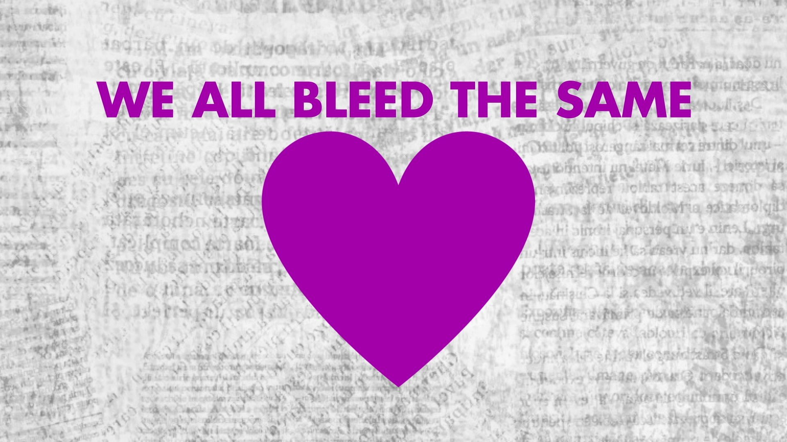
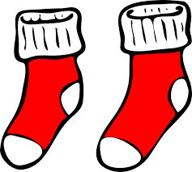

Hormones & Cell Membranes
In the same way Joe locked up Beck's f*ck-buddy Benji (rest in peace) earlier in the season, Joe traps Beck in the glass cabinet with the rare books, under lock and key. the papillae actually curve backward toward the throat, enabling them to exploit surface tension to wick up water via capillary action—the same way plants absorb water from soil.
Supple
Evidence:
